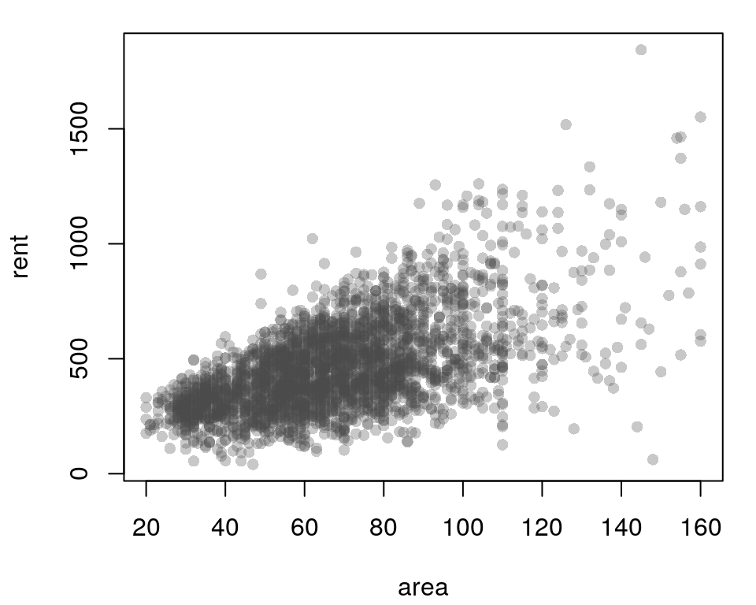
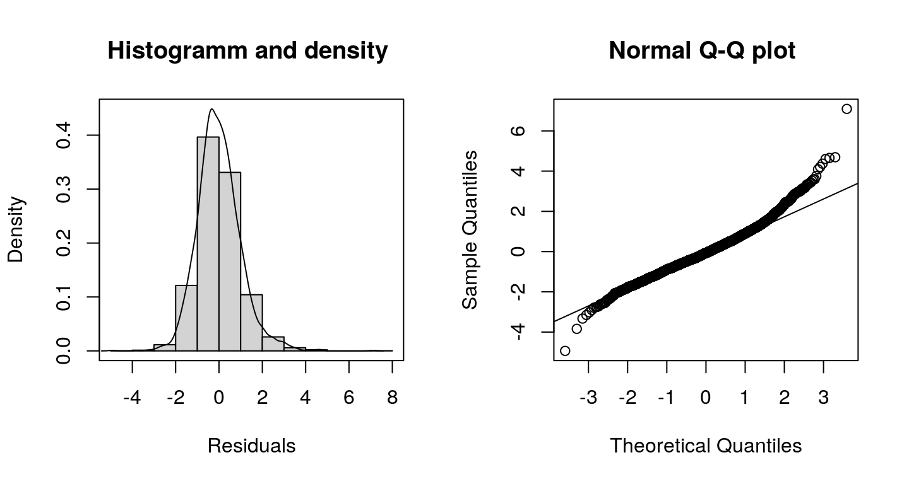
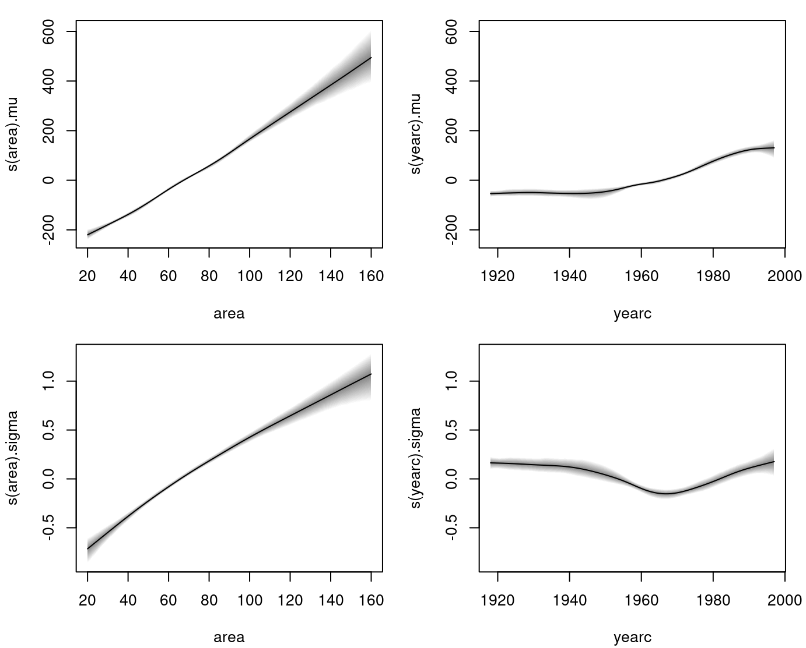
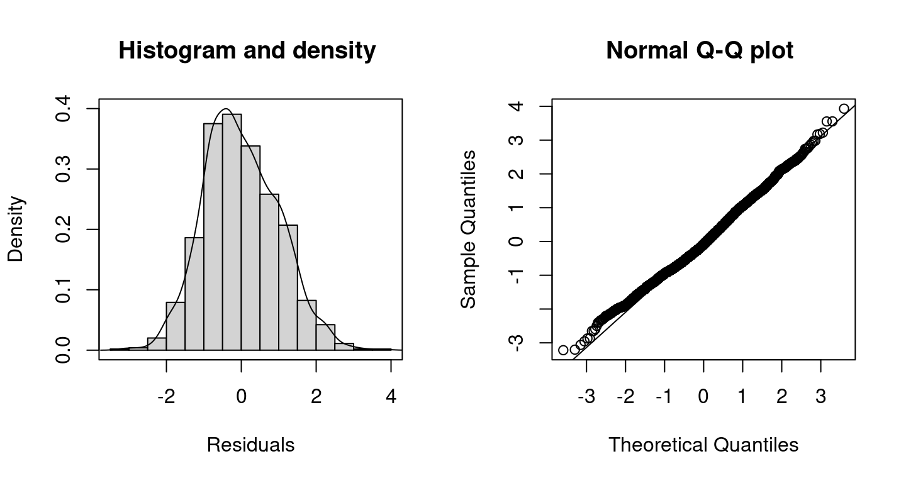

rent.RmdIn this example we analyze rent index data from Munich, Germany. The data is provided in the supplemental materials of the Regression book (Fahrmeir et al. 2013) and can be loaded into R with
file_url <- "http://www.bamlss.org/misc/rent99.raw"
rent99 <- read.table(file_url, header = TRUE)The aim of this analysis is to find a model explaining the rent or rent per square meter of an apartment. We first assume a linear relationship with homoscedastic Gaussian errors:
\[ \texttt{rent} = \mu = \beta_0 + \beta_1 \cdot \texttt{area} + \beta_2 \cdot \texttt{yearc}, \] i.e., \(\texttt{rent} \sim N(\mu, \sigma^2)\). The model can be estimated with:
## Model formula.
f1 <- rent ~ area + yearc
## Estimate model.
b1 <- bamlss(f1, data = rent99, family = "gaussian",
n.iter = 12000, burnin = 2000, thin = 10)This first starts a backfitting algorithm to find posterior mode estimates and afterwards the MCMC simulation is started using the parameters from the backfitting step as starting values. Note that we use 12000 iterations with a burnin of 2000 and only keep every 10th sample of the MCMC simulation. The model summary gives
summary(b1)##
## Call:
## bamlss(formula = rent ~ area + yearc, family = "gaussian", data = rent99,
## n.iter = 12000, burnin = 2000, thin = 10)
## ---
## Family: gaussian
## Link function: mu = identity, sigma = log
## *---
## Formula mu:
## ---
## rent ~ area + yearc
## -
## Parametric coefficients:
## Mean 2.5% 50% 97.5% parameters
## (Intercept) -4486.345 -4952.870 -4487.922 -3935.929 -4775.594
## area 5.328 5.098 5.323 5.557 5.362
## yearc 2.345 2.069 2.346 2.584 2.491
## -
## Acceptance probability:
## Mean 2.5% 50% 97.5%
## alpha 0.42118 0.01076 0.26777 1
## ---
## Formula sigma:
## ---
## sigma ~ 1
## -
## Parametric coefficients:
## Mean 2.5% 50% 97.5% parameters
## (Intercept) 5.007 4.982 5.007 5.031 5.005
## -
## Acceptance probability:
## Mean 2.5% 50% 97.5%
## alpha 0.993 0.934 1.000 1
## ---
## Sampler summary:
## -
## DIC = 39609.71 logLik = -19802.83 pd = 4.0537
## runtime = 26.134
## ---
## Optimizer summary:
## -
## AICc = 39608.2 edf = 4 logLik = -19800.1
## logPost = -19842.81 nobs = 3082 runtime = 0.016However, the assumption of homoscedastic errors is not appropriate in this case.
 As can be seen in this scatter plot, the data is heteroscedastic and the exact model might not even be linear. This is also indicated in the quantile residual plots.
 The residuals seem to be a bit skew and for the lower and higher values of rent, the model fit is not satisfactorily according the Q-Q plot.
A non-parametric model can be useful here. Therefore, we estimate a more flexible model with \[ \mu = \beta_0 + f_1(\texttt{area}) + f_2(\texttt{yearc}) \] and \[ \sigma = \exp\{\alpha_0 + g_1(\texttt{area}) + g_2(\texttt{yearc})\} \] where functions \(f_1( \cdot ), f_2( \cdot ), g_1( \cdot ), g_2( \cdot )\) are modeled using regression splines. The exponential function assures that the we estimate a positive standard deviation. This way, we allow for covariates and loose the hard assumptions of a constant standard deviation.
The model is estimated with:
## List of formulae to estimate
## heteroskedastic Gaussian model.
f2 <- list(
rent ~ s(area,k=20) + s(yearc,k=20),
sigma ~ s(area,k=20) + s(yearc,k=20)
)
b2 <- bamlss(f2, data = rent99, family = "gaussian",
n.iter = 12000, burnin = 2000, thin = 10)
summary(b2)##
## Call:
## bamlss(formula = f2, family = "gaussian", data = rent99, n.iter = 12000,
## burnin = 2000, thin = 10)
## ---
## Family: gaussian
## Link function: mu = identity, sigma = log
## *---
## Formula mu:
## ---
## rent ~ s(area, k = 20) + s(yearc, k = 20)
## -
## Parametric coefficients:
## Mean 2.5% 50% 97.5% parameters
## (Intercept) 458.7 453.3 458.6 463.9 459.1
## -
## Acceptance probability:
## Mean 2.5% 50% 97.5%
## alpha 0.9995 0.9977 1.0000 1
## -
## Smooth terms:
## Mean 2.5% 50% 97.5% parameters
## s(area).tau21 1.751e+04 5.023e-01 6.201e+03 9.066e+04 41160.87
## s(area).alpha 1.000e+00 1.000e+00 1.000e+00 1.000e+00 NA
## s(area).edf 3.569e+00 1.001e+00 3.529e+00 7.035e+00 5.83
## s(yearc).tau21 7.550e+03 4.926e+02 4.273e+03 3.708e+04 70028.12
## s(yearc).alpha 1.000e+00 1.000e+00 1.000e+00 1.000e+00 NA
## s(yearc).edf 5.853e+00 3.493e+00 5.731e+00 9.006e+00 10.39
## ---
## Formula sigma:
## ---
## sigma ~ s(area, k = 20) + s(yearc, k = 20)
## -
## Parametric coefficients:
## Mean 2.5% 50% 97.5% parameters
## (Intercept) 4.847 4.821 4.847 4.873 4.841
## -
## Acceptance probability:
## Mean 2.5% 50% 97.5%
## alpha 0.9925 0.9411 0.9999 1
## -
## Smooth terms:
## Mean 2.5% 50% 97.5% parameters
## s(area).tau21 0.0909891 0.0003845 0.0382569 0.5388624 0.029
## s(area).alpha 0.9539833 0.6923144 0.9939831 1.0000000 NA
## s(area).edf 2.6291780 1.0555217 2.5233938 5.0426360 2.325
## s(yearc).tau21 0.1106165 0.0148046 0.0788342 0.3899121 0.097
## s(yearc).alpha 0.9405832 0.6406995 0.9903837 1.0000000 NA
## s(yearc).edf 5.0416773 3.4075129 4.9333587 7.1488541 5.257
## ---
## Sampler summary:
## -
## DIC = 38650.06 logLik = -19313.72 pd = 22.6218
## runtime = 172.902
## ---
## Optimizer summary:
## -
## AICc = 38637.94 edf = 25.8059 logLik = -19292.94
## logPost = -19511.55 nobs = 3082 runtime = 0.838The summary statistics indicate that the more flexible model is more appropriate since the DIC of model b2 is much lower than the DIC of model b1.
The estimated effects are visualized with
plot(b2, ask = FALSE) By looking at the effect plots, we can conclude that in the case of the variable area an assumption of linear dependency might be justified, where in the case of yearc this is not so clear. Moreover, our estimated sigma is for neither of the variables constant.
 The quantile residual plots indicate a quite good model fit already, however, the assumption of Gaussian errors could be refined as rents can only be positive. Hence, distributions accounting for this fact should be exploited further, e.g., the Gamma distribution.
Fahrmeir, Ludwig, Thomas Kneib, Stefan Lang, and Brian Marx. 2013. Regression – Models, Methods and Applications. Berlin: Springer-Verlag.
Umlauf, Nikolaus, Nadja Klein, Achim Zeileis, and Thorsten Simon. 2024. bamlss: Bayesian Additive Models for Location Scale and Shape (and Beyond). https://CRAN.R-project.org/package=bamlss.